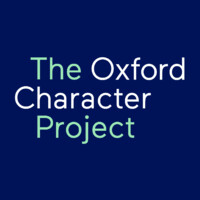
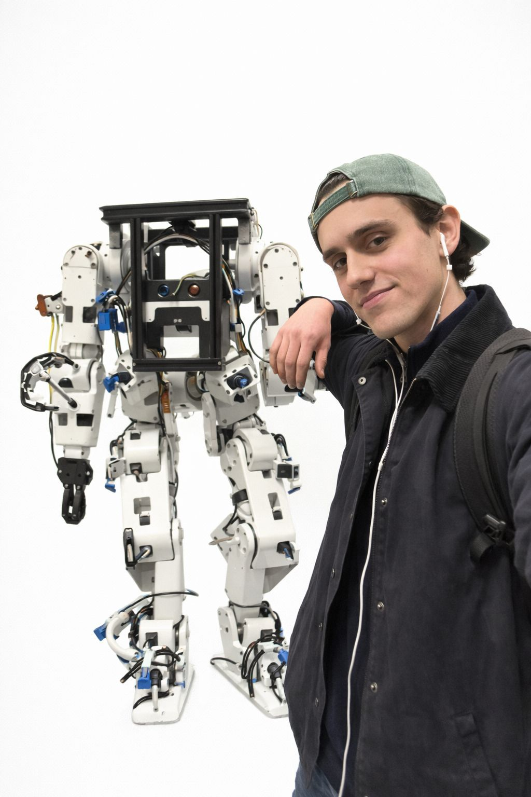
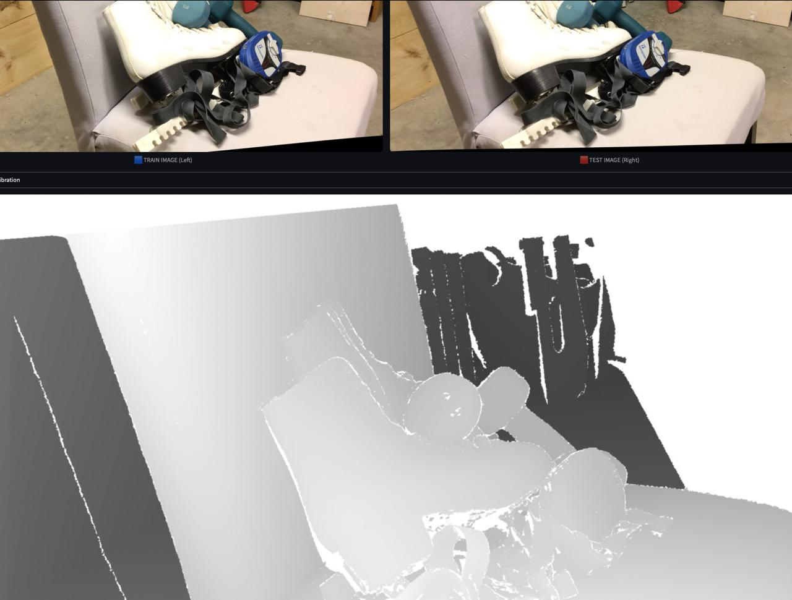
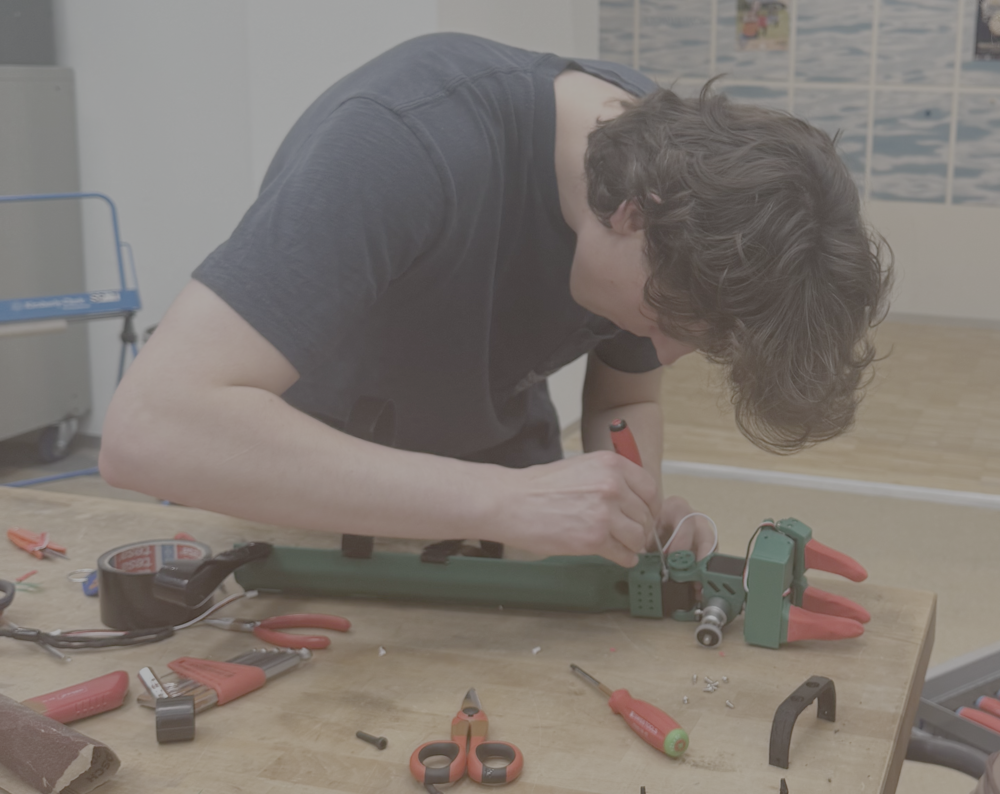
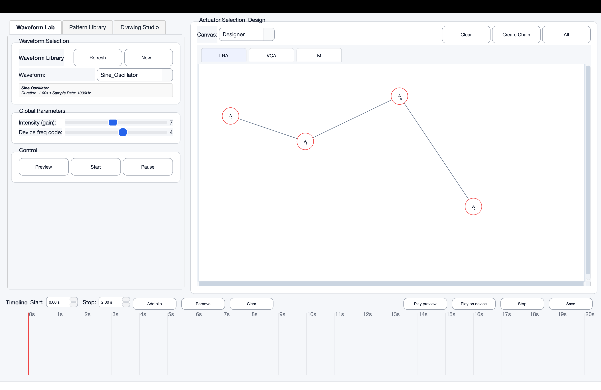
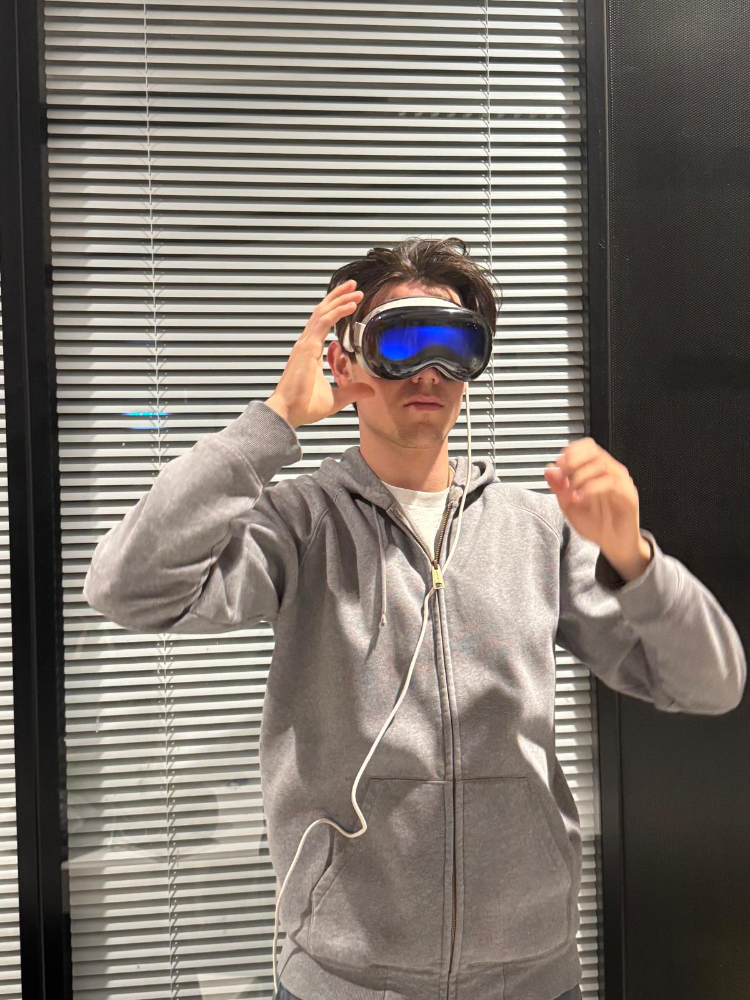

EPFL — BSc Computer Science

Student Researcher @ LIS and NTU.
Computer Science student at EPFL. I research wearable robotics, haptic feedback systems, and human-robot interaction at the Laboratory of Intelligent Systems. I worked on Humanoid Robotics and Binocular Vision at NTU Singapore as part of the Global Connect Fellowship. I apply my research on Humanoid Robotics at the EPFL AI Team by leading the Humanoid Team and building Mina, the first humanoid on campus. Mina will soon be presented during the Davos Summit on the 3rd of July. Stay tuned !
EPFL — BSc Computer Science

Lycée Jean-Monnet, Brussels — French Science Baccalaureate
World Models for Drones
Upcoming research project
Upcoming project combining drones and world models.
Soft Robotics Laboratory
National University of Singapore
Incoming summer research internship at the Soft Robotics Laboratory.

Humanoid Robotics & AI Group
NTU Singapore — Prof. Xie Ming
Selected as a student researcher for the competitive NTU Global Connect Fellowship program for a 2 months research in the Humanoid Robotics Lab.

Haptic Feedback for Drone Swarm Embodiment
Laboratory of Intelligent Systems, EPFL — Prof. Dario Floreano
Developing wearable haptic devices combining vibration and compression for drone swarm control. Conducting behavioral studies on multi-channel tactile encoding.

Humanoid Robotics Project Lead
AI TEAM
Building Mina, the first Humanoid at EPFL

Scholar
The Oxford Character Project

Team Lead, Software & Haptics
EPFL N-Pulse Make Project
Leading development of vision-based grasping pipelines for prosthetics. Managing 12 master students (being in 2nd year of bachelor) across software, firmware, and ML teams.

Telecommunications Engineer
EPFL Spacecraft Team
Developed HMAC algorithms for secure telemetry. Built UHF antenna and transceiver test systems.

Data Intern
LC3 Project, EPFL Laboratory of Construction Materials
Buit and maintained a database to track material availability for the laboratory.

ETHRC HACK2026


Laidlaw Leadership and Research Scholar
Awarded "Highly Recommended" by Taylor & Francis Group—one of 20 students recognized among over 250 scholars.





When I'm not in the Lab or working on a project, I spend my time outdoors, running, cycling, hiking, and exploring the mountains.